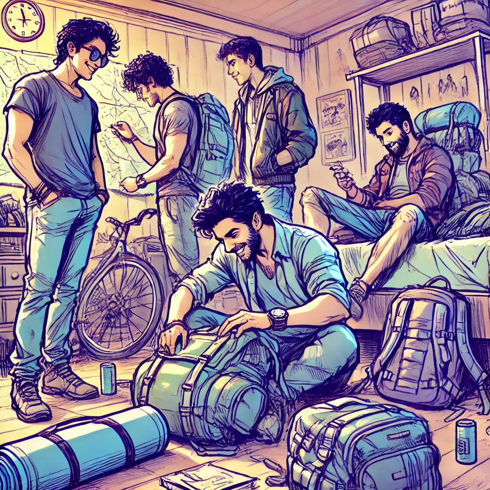
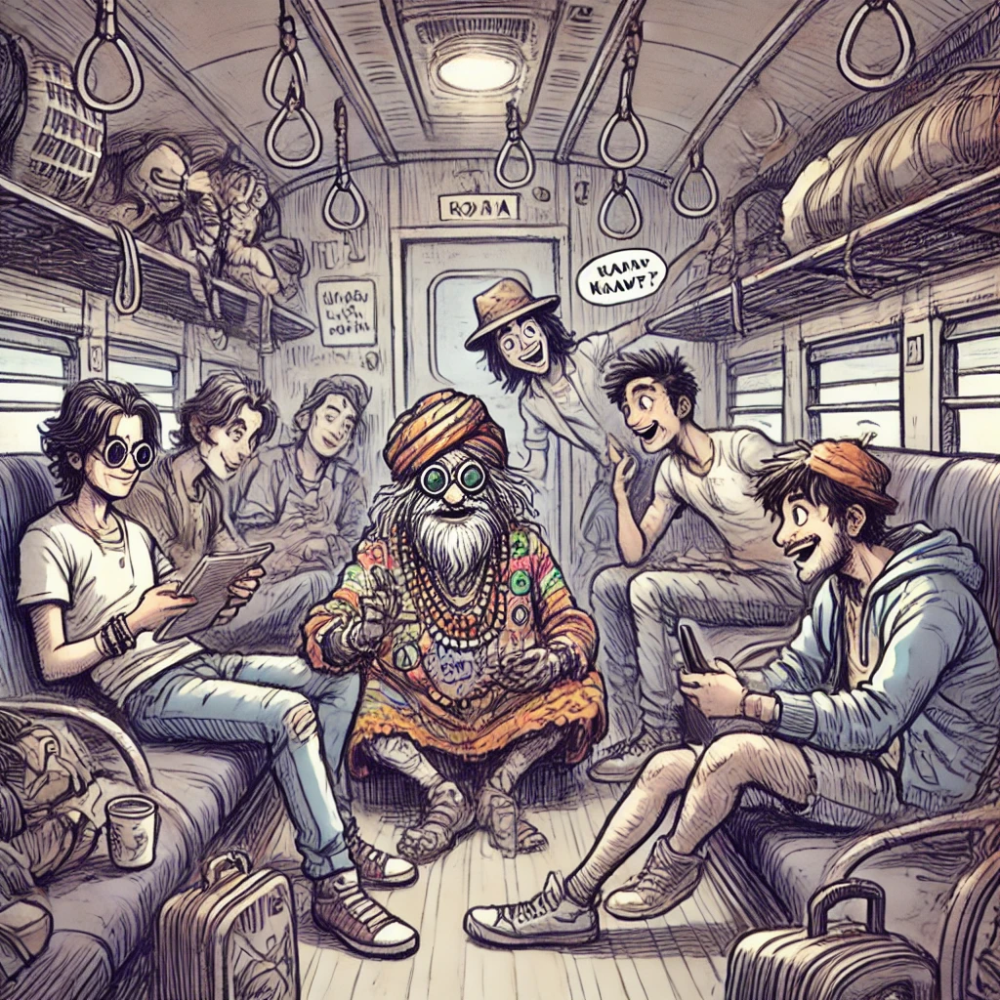
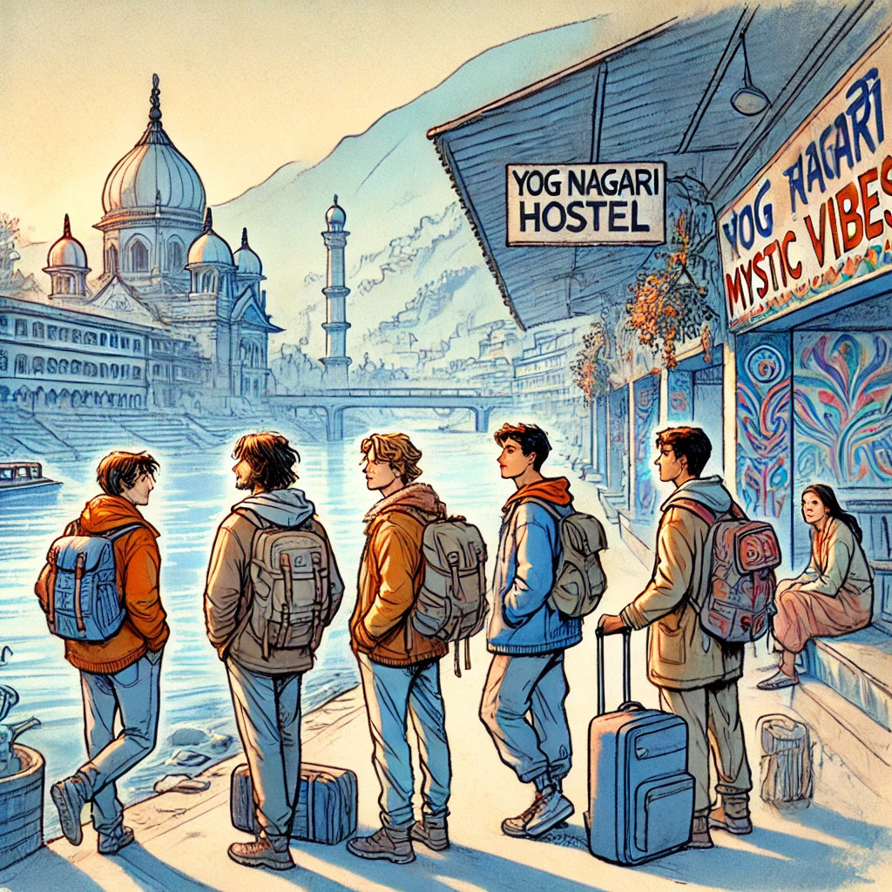
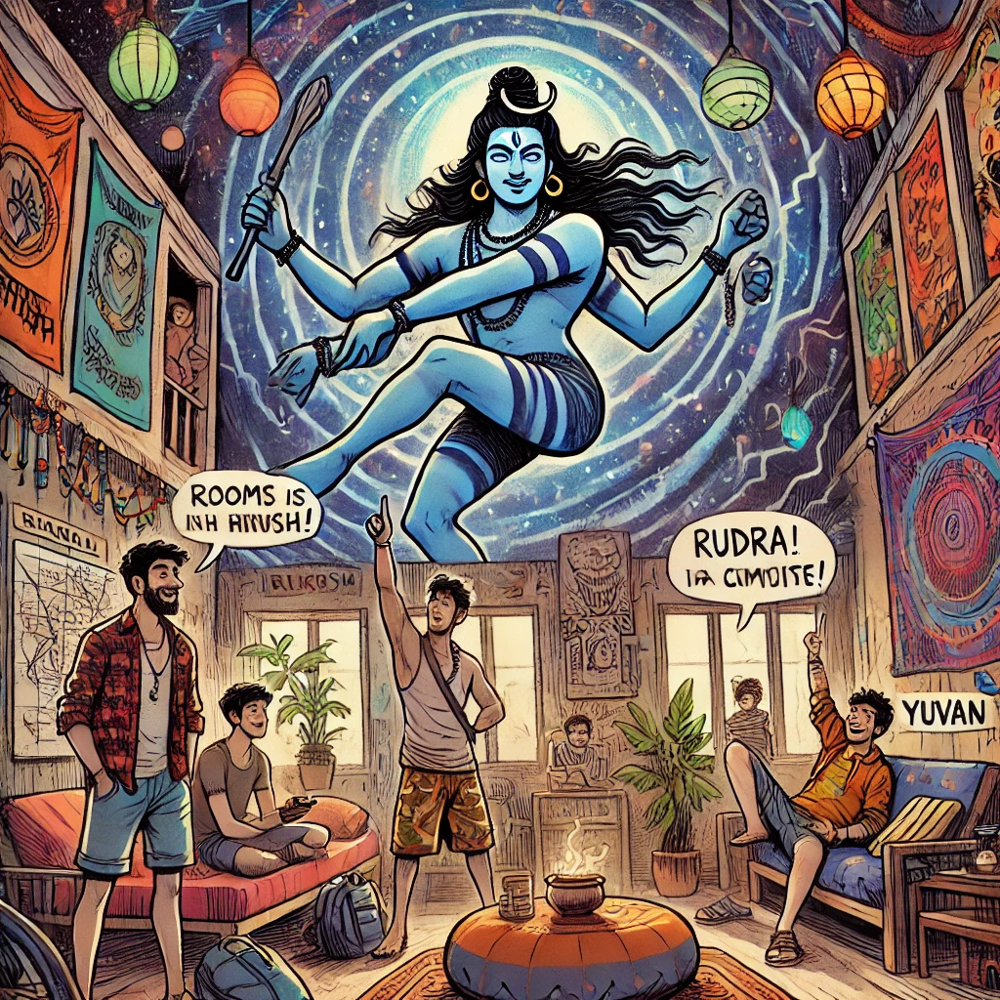
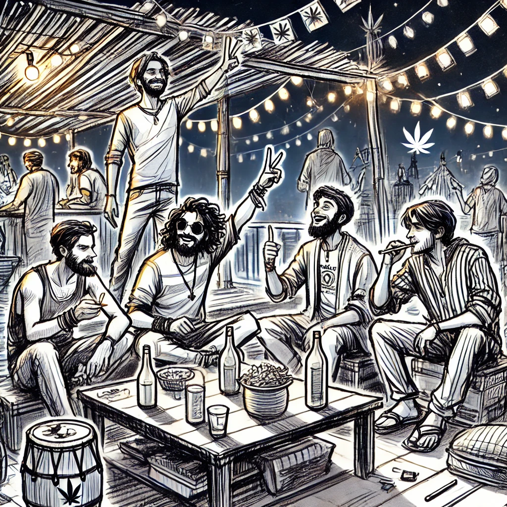
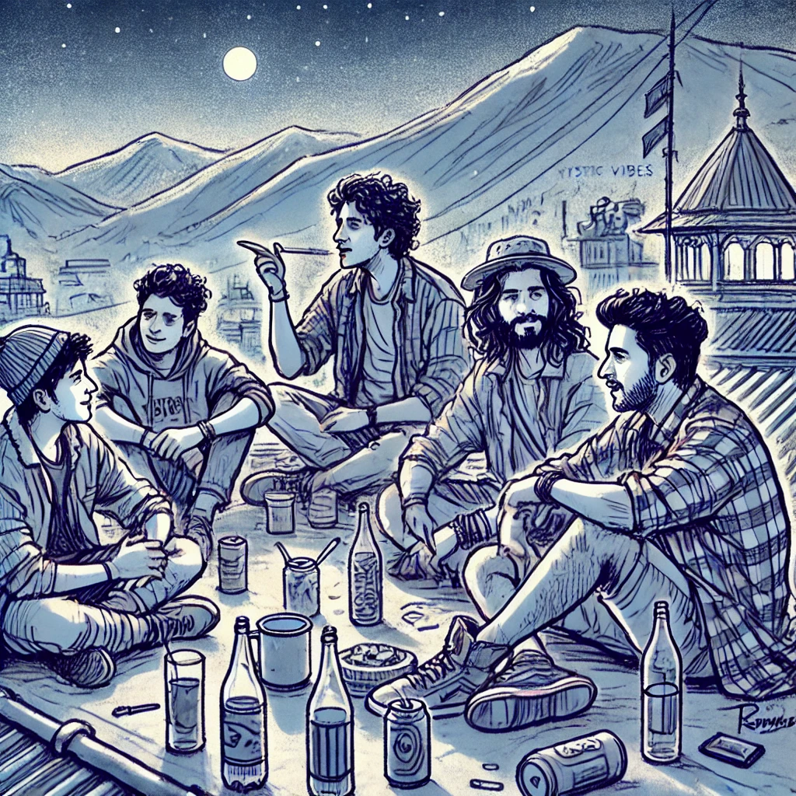

Rishikesh Revelry: The Kuari Pass Chronicles
Five friends embark on a thrilling journey from Rishikesh to Kuari Pass, discovering adventure, mystery, and the unbreakable bonds of friendship along the way.
Page 1: The Ahmedabad Hustle
The scorching sun blazes over Ahmedabad, painting the city in vibrant hues as five friends—Aarush, Vihaan, Rudra, Kiaan, and Yuvan—gear up for their epic trek to Kuari Pass. All 20 and 21 years old, they're buzzing with excitement and a hint of rebellion. Aarush, the fearless leader with a knack for stirring things up, is tossing gear into his backpack like there's no tomorrow. Vihaan, the group's comedian, cracks jokes that have everyone in stitches. Rudra, the meticulous planner, is double-checking their gadgets and maps, ensuring nothing is left behind. Kiaan, the smooth-talking charmer, is making sure everyone's spirits are high with his infectious energy. Yuvan, the introspective artist, sketches their adventure plans in his well-worn notebook. The apartment is a whirlwind of laughter, playful bickering, and last-minute chaos as they prepare for the adventure of a lifetime.
“Bro, Aarush, are you sure you need that extra pair of boots? We’re not climbing Everest… yet,” Vihaan teases, earning a mock glare from Aarush.
“Hey, better safe than sorry, man. You never know when you’ll need to stomp out a campfire with these bad boys,” Aarush retorts, winking at Vihaan.
The air is thick with anticipation and the scent of excitement as they finalize their plans, unaware of the extraordinary journey that awaits them.
Page 2: Train Shenanigans
Boarding the overnight train from Ahmedabad Railway Station to Yog Nagari Rishikesh Railway Station, the crew hustles through the crowded compartments, determined to stick together. The compartment is a mix of snoozers and chatters, filled with the aroma of chai and the hum of conversations. Vihaan accidentally ends up next to an eccentric old man decked out in colorful beads and a patched-up shawl. Without missing a beat, Vihaan starts mimicking the old man's accent, sending everyone into fits of laughter.
“Oi, young man! Have you seen the spirits wandering near Kuari Pass?” Vihaan imitates, exaggerating the old man's voice.
The old man, amused but mysterious, spins a spooky yarn about trekkers who vanished near Kuari Pass, claiming restless spirits roam the trails. “They say the mountains hold secrets no one should uncover,” he warns, his eyes glinting under the dim train lights.
The friends laugh it off, but Yuvan catches a flicker of unease in his eyes, sparking a silent curiosity. “Maybe we should pack an extra flashlight,” Yuvan muses quietly, glancing at Rudra who merely smirks.
Page 3: Arrival in Rishikesh
Dawn breaks as they roll into Yog Nagari Rishikesh Railway Station, greeted by the tranquil flow of the Ganges and the towering Himalayas. Aarush and Vihaan take the lead, scouting for a rad place to crash. They stumble upon the "Mystic Vibes Hostel", an eclectic spot with psychedelic murals and a rooftop lounge that promises good vibes only. Rudra and Yuvan are already snapping pics and soaking in the scenery, while Kiaan strikes up conversations with fellow travelers, instantly making new friends.
“Check out these walls, guys! This place is lit,” Vihaan exclaims, admiring the vibrant artwork.
Rudra nods approvingly, pulling out his phone to capture the moment. “Perfect spot for some Insta stories,” he adds with a grin.
The air is thick with incense and the distant sounds of temple bells, blending spirituality with the thrill of adventure.
Page 4: Hostel Havoc
Back at the hostel, Rudra suggests they check out another spot he found online—a place renowned for its epic parties and killer breakfast spread. After a playful debate filled with friendly jabs and exaggerated gestures, they decide to give it a shot. They move into a quirky hostel where rooms are named after Himalayan peaks, each decorated with vibrant tapestries and funky lights. The common area boasts a massive mural of Shiva dancing amidst a cosmic backdrop, setting the tone for unforgettable nights ahead.
“Alright, team Kuari, let’s make this place ours,” Aarush declares, pumping his fist in the air.
“As long as Rudra doesn’t turn our room into a campsite with his maps and schedules,” Vihaan quips, earning a laugh from the group.
The hostel’s ambiance is electric, filled with the promise of nights they’ll never forget.
Page 5: Nightlife Unleashed
As night falls, Mystic Vibes Hostel transforms into a playground of youthful energy. The rooftop is lit with fairy lights, and a makeshift bar serves up local brews and potent bhang lassis. Aarush pulls out a neatly rolled joint of premium Himalayan kush, passing it around with a grin. Vihaan pops open a bottle of locally brewed beer, initiating a toast that echoes laughter and cheers.
“To the best trip of our lives!” Vihaan declares, raising his bottle.
Rudra hooks up his portable speaker, blasting a mix of trance beats and classic rock, while Kiaan smooth-talks a group of international backpackers, sparking spontaneous dance-offs. Yuvan, usually reserved, joins a chill corner with some new friends, sharing deep conversations under the starlit sky.
“This place is straight fire,” Aarush shouts over the music, his eyes sparkling with excitement.
The night is a haze of smoke, music, and unfiltered camaraderie, cementing their bond as they revel in the freedom of youth.
Page 6: Dawn of Destiny
Around 4 a.m., the hostel quiets down as the first light of dawn seeps in. The friends gather on the rooftop terrace, the cool morning breeze a stark contrast to the night's warmth. They share their dreams and fears, the remnants of bhang and alcohol still tingling in their veins. Yuvan opens up about a recurring dream of hidden mountain paths and ancient secrets, igniting a spark of intrigue among the group.
“Do you ever feel like we’re on the edge of something huge?” Yuvan asks, his voice barely above a whisper.
Aarush gazes at the silhouetted peaks, feeling the pull of the unknown. “Absolutely. Feels like these mountains are calling us,” he responds thoughtfully.
With only two hours before their bus departure, they decide to stay up a bit longer, toasting to the adventure ahead with the last of their drinks. Little do they know, their trek to Kuari Pass will push their limits, test their friendships, and unveil mysteries that lie deep within the mountains.
“Here’s to the unknown,” Rudra toasts, clinking his bottle against Aarush’s.
 To Be Continued... What secrets will the Kuari Pass reveal? How will the friends navigate the challenges ahead? Gear up for more thrills and spills in Part Two of Rishikesh Revelry: The Kuari Pass Chronicles.
To Be Continued... What secrets will the Kuari Pass reveal? How will the friends navigate the challenges ahead? Gear up for more thrills and spills in Part Two of Rishikesh Revelry: The Kuari Pass Chronicles.